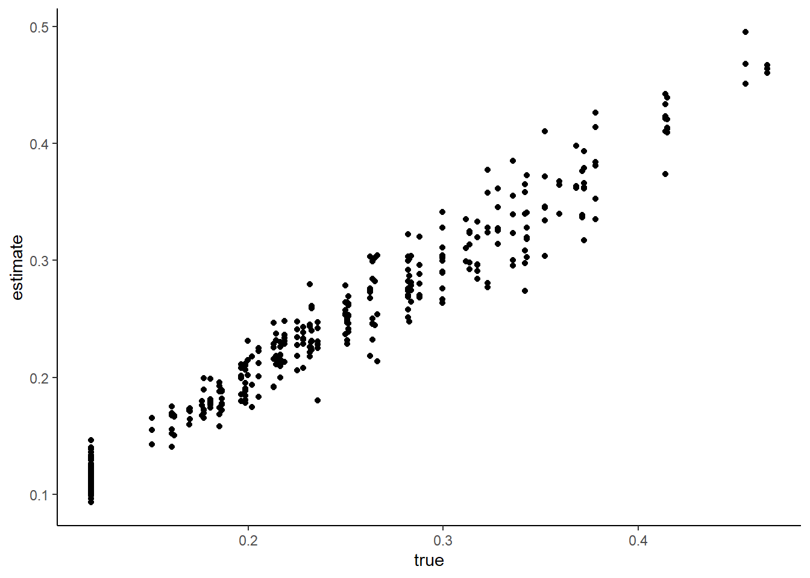
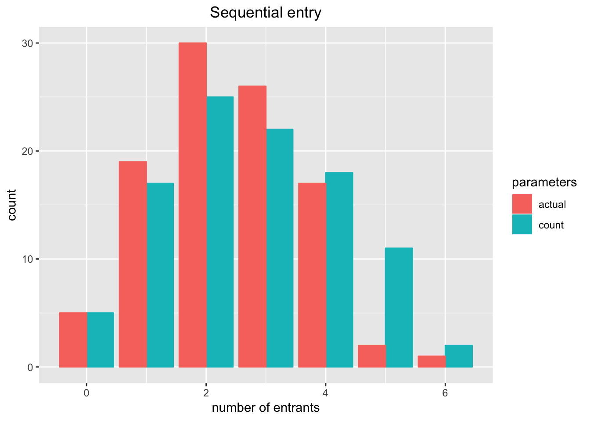
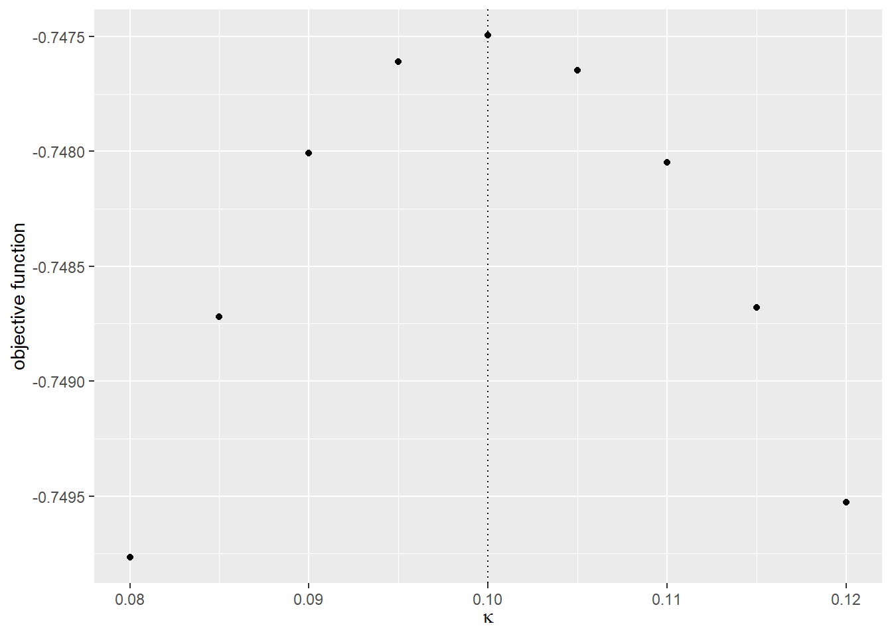
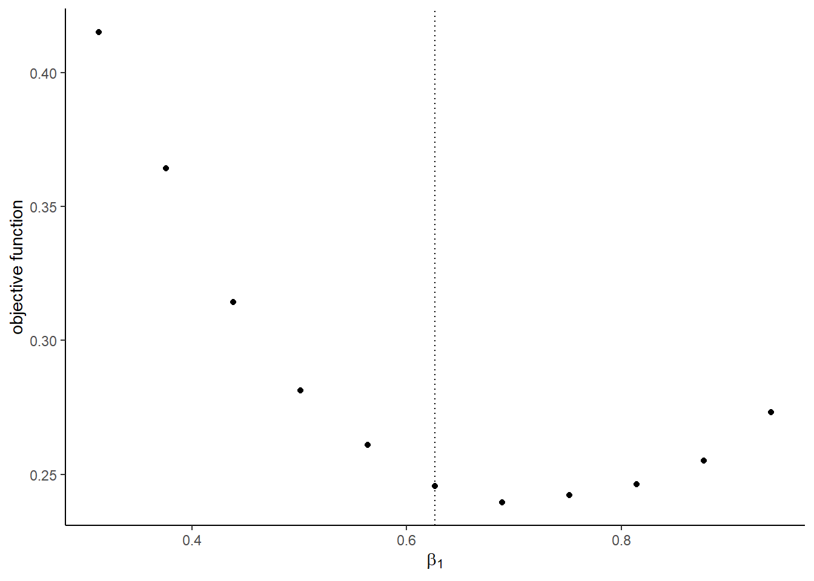

Chapter 17 Assignment 7: Dynamic Decision
17.1 Simulate data
Suppose that there is a firm and it makes decisions for \(t = 1, \cdots, \infty\). We solve the model under the infinite-horizon assumption, but generate data only for \(t = 1, \cdots, T\). There are \(L = 5\) state \(s \in \{1, 2, 3, 4, 5\}\) states for the player. The firm can choose \(K + 1 = 2\) actions \(a \in \{0, 1\}\).
The mean period payoff to the firm is: \[ \pi(a, s) := \alpha \ln s - \beta a, \] where \(\alpha, \beta > 0\). The period payoff is: \[ \pi(a, s) + \epsilon(a), \] and \(\epsilon(a)\) is an i.i.d. type-I extreme random variable that is independent of all the other variables.
At the beginning of each period, the state \(s\) and choice-specific shocks \(\epsilon(a), a = 0, 1\) are realized, and the the firm chooses her action. Then, the game moves to the next period.
Suppose that \(s > 1\) and \(s < L\). If \(a = 0\), the state stays at the same state with probability \(1 - \kappa\) and moves down by 1 with probability \(\kappa\). If \(a = 1\), the state moves up by 1 with probability \(\gamma\), moves down by 1 with probability \(\kappa\), and stays at the same with probability \(1 - \kappa - \gamma\).
Suppose that \(s = 1\). If \(a = 0\), the state stays at the same state with probability 1. If \(a = 1\), the state moves up by 1 with probability \(\gamma\) and stays at the same with probability \(1 - \gamma\).
Suppose that \(s = L\). If \(a = 0\), the state stays at the same state with probability \(1 - \kappa\) and moves down by 1 with probability \(\kappa\). If \(a = 1\), the state moves down by 1 with probability \(\kappa\), and stays at the same with probability \(1 - \kappa\).
The mean period profit is summarized in \(\Pi\) as: \[ \Pi := \begin{pmatrix} \pi(0, 1)\\ \vdots\\ \pi(K, 1)\\ \vdots \\ \pi(0, L)\\ \vdots\\ \pi(K, L)\\ \end{pmatrix} \]
The transition law is summarized in \(G\) as:
\[ g(a, s, s') := \mathbb{P}\{s_{t + 1} = s'|s_t = s, a_t = a\}, \]
\[ G := \begin{pmatrix} g(0, 1, 1) & \cdots & g(0, 1, L)\\ \vdots & & \vdots \\ g(K, 1, 1) & \cdots & g(K, 1, L)\\ & \vdots & \\ g(0, L, 1) & \cdots & g(0, L, L)\\ \vdots & & \vdots \\ g(K, L, 1) & \cdots & g(K, L, L)\\ \end{pmatrix}. \] The discount factor is denoted by \(\delta\). We simulate data for \(N\) firms for \(T\) periods each.
- Set constants and parameters as follows:
# set seed
set.seed(1)
# set constants
L <- 5
K <- 1
T <- 100
N <- 1000
lambda <- 1e-10
# set parameters
alpha <- 0.5
beta <- 3
kappa <- 0.1
gamma <- 0.6
delta <- 0.95- Write function
compute_pi(alpha, beta, L, K)that computes \(\Pi\) given parameters and compute the true \(\Pi\) under the true parameters. Don’t use methods indplyrand deal with matrix operations.
PI <-
compute_PI(
alpha = alpha,
beta = beta,
L = L,
K = K
);
PI## [,1]
## k0_l1 0.0000000
## k1_l1 -3.0000000
## k0_l2 0.3465736
## k1_l2 -2.6534264
## k0_l3 0.5493061
## k1_l3 -2.4506939
## k0_l4 0.6931472
## k1_l4 -2.3068528
## k0_l5 0.8047190
## k1_l5 -2.1952810- Write function
compute_G(kappa, gamma, L, K)that computes \(G\) given parameters and compute the true \(G\) under the true parameters. Don’t use methods indplyrand deal with matrix operations.
G <-
compute_G(
kappa = kappa,
gamma = gamma,
L = L,
K = K
);
G## l1 l2 l3 l4 l5
## k0_l1 1.0 0.0 0.0 0.0 0.0
## k1_l1 0.4 0.6 0.0 0.0 0.0
## k0_l2 0.1 0.9 0.0 0.0 0.0
## k1_l2 0.1 0.3 0.6 0.0 0.0
## k0_l3 0.0 0.1 0.9 0.0 0.0
## k1_l3 0.0 0.1 0.3 0.6 0.0
## k0_l4 0.0 0.0 0.1 0.9 0.0
## k1_l4 0.0 0.0 0.1 0.3 0.6
## k0_l5 0.0 0.0 0.0 0.1 0.9
## k1_l5 0.0 0.0 0.0 0.1 0.9The exante-value function is written as a function of a conditional choice probability as follows: \[ \varphi^{(\theta_1, \theta_2)}(p) := [I - \delta \Sigma(p) G]^{-1}\Sigma(p)[\Pi + E(p)], \] where \(\theta_1 = (\alpha, \beta)\) and \(\theta_2 = (\kappa, \gamma)\) and: \[ \Sigma(p) = \begin{pmatrix} p(1)' & & \\ & \ddots & \\ & & p(L)' \end{pmatrix} \] and: \[ E(p) = \gamma - \ln p. \] Note that \(\gamma\) in the formula of \(E(p)\) refers to the Euler constant, not the parameter defined before.
- Write a function
compute_exante_value(p, PI, G, L, K, delta)that returns the exante value function given a conditional choice probability. Don’t use methods indplyrand deal with matrix operations. When a choice probability is zero at some element, the corresponding element of \(E(p)\) can be set at zero, because anyway we multiply the zero probability to the element and the corresponding element in \(E(p)\) does not affect the result.
p <-
matrix(
rep(0.5, L * (K + 1)),
ncol = 1
);
p## [,1]
## [1,] 0.5
## [2,] 0.5
## [3,] 0.5
## [4,] 0.5
## [5,] 0.5
## [6,] 0.5
## [7,] 0.5
## [8,] 0.5
## [9,] 0.5
## [10,] 0.5V <-
compute_exante_value(
p = p,
PI = PI,
G = G,
L = L,
K = K,
delta = delta
);
V## [,1]
## l1 5.777876
## l2 7.597282
## l3 9.126304
## l4 10.115439
## l5 10.593438The optimal conditional choice probability is written as a function of an exante value function as follows: \[ \Lambda^{(\theta_1, \theta_2)}(V)(a, s) := \frac{\exp[\pi(a, s) + \delta \sum_{s'}V(s')g(a, s, s')]}{\sum_{a'}\exp[\pi(a', s) + \delta \sum_{s'}V(s')g(a', s, s')]}, \] where \(V\) is an exante value function.
- Write a function
compute_ccp(V, PI, G, L, K, delta)that returns the optimal conditional choice probability given an exante value function. Don’t use methods indplyrand deal with matrix operations. To do so, write a functioncompute_choice_value(V, PI, G, delta)that returns the choice-specific value function. Use this for debugging by checking if the results are intuitive.
value <-
compute_choice_value(
V = V,
PI = PI,
G = G,
delta = delta
);
value## [,1]
## k0_l1 5.488982
## k1_l1 3.526044
## k0_l2 7.391148
## k1_l2 5.262691
## k0_l3 9.074038
## k1_l3 6.637845
## k0_l4 10.208846
## k1_l4 7.481306
## k0_l5 10.823075
## k1_l5 7.823075p <-
compute_ccp(
V = V,
PI = PI,
G = G,
L = L,
K = K,
delta = delta
);
p## [,1]
## k0_l1 0.87685057
## k1_l1 0.12314943
## k0_l2 0.89363847
## k1_l2 0.10636153
## k0_l3 0.91954591
## k1_l3 0.08045409
## k0_l4 0.93863232
## k1_l4 0.06136768
## k0_l5 0.95257413
## k1_l5 0.04742587- Write a function that find the equilibrium conditional choice probability and ex-ante value function by iterating the update of an exante value function and an optimal conditional choice probability. The iteration should stop when \(\max_s|V^{(r + 1)}(s) - V^{(r)}(s)| < \lambda\) with \(\lambda = 10^{-10}\).
output <-
solve_dynamic_decision(
PI = PI,
G = G,
L = L,
K = K,
delta = delta,
lambda = lambda
);
output## $p
## [,1]
## k0_l1 0.82218962
## k1_l1 0.17781038
## k0_l2 0.80024354
## k1_l2 0.19975646
## k0_l3 0.83074516
## k1_l3 0.16925484
## k0_l4 0.87691534
## k1_l4 0.12308466
## k0_l5 0.95257413
## k1_l5 0.04742587
##
## $V
## [,1]
## l1 15.46000
## l2 18.03675
## l3 20.86514
## l4 23.33721
## l5 25.15557p <- output$p
V <- output$V
value <-
compute_choice_value(
V = V,
PI = PI,
G = G,
delta = delta
);
value## [,1]
## k0_l1 14.68700
## k1_l1 13.15574
## k0_l2 17.23669
## k1_l2 15.84887
## k0_l3 20.10249
## k1_l3 18.51157
## k0_l4 22.62865
## k1_l4 20.66511
## k0_l5 24.52976
## k1_l5 21.52976- Write a function
simulate_dynamic_decision(p, s, PI, G, L, K, T, delta, seed)that simulate the data for a single firm starting from an initial state for \(T\) periods. The function should accept a value of seed and set the seed at the beginning of the procedure inside the function, because the process is stochastic. To match the generated random numbers, for each period, generate action usingrmultinomand then state usingrmultinom.
# set initial value
s <- 1
# draw simulation for a firm
seed <- 1
df <-
simulate_dynamic_decision(
p = p,
s = s,
G = G,
L = L,
K = K,
T = T,
delta = delta,
seed = seed
);
df## # A tibble: 100 × 3
## t s a
## <int> <dbl> <dbl>
## 1 1 1 0
## 2 2 1 0
## 3 3 1 0
## 4 4 1 1
## 5 5 2 1
## 6 6 1 0
## 7 7 1 0
## 8 8 1 0
## 9 9 1 0
## 10 10 1 0
## # … with 90 more rows- Write a function
simulate_dynamic_decision_across_firms(p, s, PI, G, L, K, T, N, delta)that returns simulation data for \(N\) firm. For firm \(i\), set the seed at \(i\)
df <-
simulate_dynamic_decision_across_firms(
p = p,
s = s,
G = G,
L = L,
K = K,
T = T,
N = N,
delta = delta
)
saveRDS(
df,
file = "data/a7/A7_df.rds"
)df <- readRDS(file = "data/a7/A7_df.rds")
df## # A tibble: 100,000 × 4
## i t s a
## <int> <int> <dbl> <dbl>
## 1 1 1 1 0
## 2 1 2 1 0
## 3 1 3 1 0
## 4 1 4 1 1
## 5 1 5 2 1
## 6 1 6 1 0
## 7 1 7 1 0
## 8 1 8 1 0
## 9 1 9 1 0
## 10 1 10 1 0
## # … with 99,990 more rows- Write a function
estimate_ccp(df)that returns a non-parametric estimate of the conditional choice probability in the data. Compare the estimated conditional choice probability and the true conditional choice probability by a bar plot.
p_est <- estimate_ccp(df = df)
check_ccp <-
cbind(
p,
p_est
)
colnames(check_ccp) <-
c(
"true",
"estimate"
)
check_ccp <-
check_ccp %>%
reshape2::melt()
ggplot(
data = check_ccp,
aes(
x = Var1,
y = value,
fill = Var2
)
) +
geom_bar(
stat = "identity",
position = "dodge"
) +
labs(fill = "Value") +
xlab("action/state") +
ylab("probability")
- Write a function
estimate_G(df)that returns a non-parametric estiamte of the transition matrix in the data. Compare the estimated transition matrix and the true transition matrix by a bar plot.
G_est <- estimate_G(df = df);
G_est## l1 l2 l3 l4 l5
## k0_l1 1.0000000 0.00000000 0.0000000 0.00000000 0.0000000
## k1_l1 0.3930818 0.60691824 0.0000000 0.00000000 0.0000000
## k0_l2 0.1012162 0.89878384 0.0000000 0.00000000 0.0000000
## k1_l2 0.1031410 0.31276454 0.5840945 0.00000000 0.0000000
## k0_l3 0.0000000 0.09660837 0.9033916 0.00000000 0.0000000
## k1_l3 0.0000000 0.09974569 0.3071489 0.59310540 0.0000000
## k0_l4 0.0000000 0.00000000 0.1012564 0.89874358 0.0000000
## k1_l4 0.0000000 0.00000000 0.1039339 0.29966003 0.5964060
## k0_l5 0.0000000 0.00000000 0.0000000 0.09891400 0.9010860
## k1_l5 0.0000000 0.00000000 0.0000000 0.09751037 0.9024896check_G <-
data.frame(
type = "true",
reshape2::melt(G)
)
check_G_est <-
data.frame(
type = "estimate",
reshape2::melt(G_est)
)
check_G <-
rbind(
check_G,
check_G_est
)
check_G$variable <-
paste(
check_G$Var1,
check_G$Var2,
sep = "_"
)
ggplot(
data = check_G,
aes(
x = variable,
y = value,
fill = type
)
) +
geom_bar(
stat = "identity",
position = "dodge"
) +
labs(fill = "Value") +
xlab("action/state/state") +
ylab("probability") +
theme(axis.text.x = element_blank())
17.2 Estimate parameters
- Vectorize the parameters as follows:
theta_1 <-
c(
alpha,
beta
)
theta_2 <-
c(
kappa,
gamma
)
theta <-
c(
theta_1,
theta_2
)First, we estimate the parameters by a nested fixed-point algorithm. The loglikelihood for \(\{a_{it}, s_{it}\}_{i = 1, \cdots, N, t = 1, \cdots, T}\) is: \[ \frac{1}{NT} \sum_{i = 1}^N \sum_{t = 1}^T[\log\mathbb{P}\{a_{it}|s_{it}\} + \log \mathbb{P}\{s_{i, t + 1}|a_{it}, s_{it}\}], \] with \(\mathbb{P}\{s_{i, T + 1}|a_{iT}, s_{iT}\} = 1\) for all \(i\) as \(s_{i, T + 1}\) is not observed.
- Write a function
compute_loglikelihood_NFP(theta, df, delta, L, K)that compute the loglikelihood.
loglikelihood <-
compute_loglikelihood_NFP(
theta = theta,
df = df,
delta = delta,
L = L,
K = K
);
loglikelihood## [1] -0.7474961- Check the value of the objective function around the true parameter.
# label
label <-
c(
"\\alpha",
"\\beta",
"\\kappa",
"\\gamma"
)
label <-
paste(
"$",
label,
"$",
sep = ""
)
# compute the graph
graph <-
foreach (
i = 1:length(theta)
) %do% {
theta_i <- theta[i]
theta_i_list <-
theta_i * seq(
0.8,
1.2,
by = 0.05
)
objective_i <-
foreach (
j = 1:length(theta_i_list),
.combine = "rbind"
) %do% {
theta_ij <- theta_i_list[j]
theta_j <- theta
theta_j[i] <- theta_ij
objective_ij <-
compute_loglikelihood_NFP(
theta_j,
df,
delta,
L,
K
);
loglikelihood
return(objective_ij)
}
df_graph <-
data.frame(
x = theta_i_list,
y = objective_i
)
g <-
ggplot(
data = df_graph,
aes(
x = x,
y = y
)
) +
geom_point() +
geom_vline(
xintercept = theta_i,
linetype = "dotted"
) +
ylab("objective function") +
xlab(TeX(label[i]))
return(g)
}
saveRDS(
graph,
file = "data/a7/A7_NFP_graph.rds"
)graph <- readRDS(file = "data/a7/A7_NFP_graph.rds")
graph## [[1]]
##
## [[2]]
##
## [[3]]
##
## [[4]]
- Estiamte the parameters by maximizing the loglikelihood. To keep the model to be well-defined, impose an ad hoc lower and upper bounds such that \(\alpha \in [0, 1], \beta \in [0, 5], \kappa \in [0, 0.2], \gamma \in [0, 0.7]\).
lower <- rep(0, length(theta))
upper <- c(1, 5, 0.2, 0.7)
NFP_result <-
optim(
par = theta,
fn = compute_loglikelihood_NFP,
method = "L-BFGS-B",
lower = lower,
upper = upper,
control = list(fnscale = -1),
df = df,
delta = delta,
L = L,
K = K
)
saveRDS(
NFP_result,
file = "data/a7/A7_NFP_result.rds"
)NFP_result <- readRDS(file = "data/a7/A7_NFP_result.rds")
NFP_result## $par
## [1] 0.5273235 3.0652558 0.1000122 0.5955431
##
## $value
## [1] -0.7474743
##
## $counts
## function gradient
## 21 21
##
## $convergence
## [1] 0
##
## $message
## [1] "CONVERGENCE: REL_REDUCTION_OF_F <= FACTR*EPSMCH"compare <-
data.frame(
true = theta,
estimate = NFP_result$par
);
compare## true estimate
## 1 0.5 0.5273235
## 2 3.0 3.0652558
## 3 0.1 0.1000122
## 4 0.6 0.5955431Next, we estimate the parameters by CCP approach.
- Write a function
estimate_theta_2(df)that returns the estimates of \(\kappa\) and \(\gamma\) directly from data by counting relevant events.
theta_2_est <- estimate_theta_2(df = df);
theta_2_est## [1] 0.09988488 0.59551895The objective function of the minimum distance estimator based on the conditional choice probability approach is: \[ \frac{1}{KL}\sum_{s = 1}^L \sum_{a = 1}^K\{\hat{p}(a, s) - p^{(\theta_1, \theta_2)}(a, s)\}^2, \] where \(\hat{p}\) is the non-parametric estimate of the conditional choice probability and \(p^{(\theta_1, \theta_2)}\) is the optimal conditional choice probability under parameters \(\theta_1\) and \(\theta_2\).
- Write a function
compute_CCP_objective(theta_1, theta_2, p_est, L, K, delta)that returns the objective function of the above minimum distance estimator given a non-parametric estimate of the conditional choice probability and \(\theta_1\) and \(\theta_2\).
compute_CCP_objective(
theta_1 = theta_1,
theta_2 = theta_2,
p_est = p_est,
L = L,
K = K,
delta = delta
)## [1] 5.000511e-06- Check the value of the objective function around the true parameter.
# label
label <-
c(
"\\alpha",
"\\beta"
)
label <-
paste(
"$",
label,
"$",
sep = ""
)
# compute the graph
graph <-
foreach (
i = 1:length(theta_1)
) %do% {
theta_i <- theta_1[i]
theta_i_list <-
theta_i * seq(
0.8,
1.2,
by = 0.05
)
objective_i <-
foreach (
j = 1:length(theta_i_list),
.combine = "rbind"
) %do% {
theta_ij <- theta_i_list[j]
theta_j <- theta_1
theta_j[i] <- theta_ij
objective_ij <-
compute_CCP_objective(
theta_j,
theta_2,
p_est,
L,
K,
delta
)
return(objective_ij)
}
df_graph <-
data.frame(
x = theta_i_list,
y = objective_i
)
g <-
ggplot(
data = df_graph,
aes(
x = x,
y = y)
) +
geom_point() +
geom_vline(
xintercept = theta_i,
linetype = "dotted"
) +
ylab("objective function") +
xlab(TeX(label[i]))
return(g)
}
saveRDS(
graph,
file = "data/a7/A7_CCP_graph.rds"
)graph <- readRDS(file = "data/a7/A7_CCP_graph.rds")
graph## [[1]]
##
## [[2]]
- Estiamte the parameters by minimizing the objective function. To keep the model to be well-defined, impose an ad hoc lower and upper bounds such that \(\alpha \in [0, 1], \beta \in [0, 5]\).
lower <- rep(0, length(theta_1))
upper <- c(1, 5)
CCP_result <-
optim(
par = theta_1,
fn = compute_CCP_objective,
method = "L-BFGS-B",
lower = lower,
upper = upper,
theta_2 = theta_2_est,
p_est = p_est,
L = L,
K = K,
delta = delta
)
saveRDS(
CCP_result,
file = "data/a7/A7_CCP_result.rds"
)CCP_result <- readRDS(file = "data/a7/A7_CCP_result.rds")
CCP_result## $par
## [1] 0.5271684 3.0644600
##
## $value
## [1] 1.790528e-06
##
## $counts
## function gradient
## 11 11
##
## $convergence
## [1] 0
##
## $message
## [1] "CONVERGENCE: REL_REDUCTION_OF_F <= FACTR*EPSMCH"compare <-
data.frame(
true = theta_1,
estimate = CCP_result$par
);
compare## true estimate
## 1 0.5 0.5271684
## 2 3.0 3.0644600